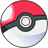
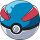

Disponible dès maintenant !


 Vue de l'intérieur, une Poké Ball contient plusieurs surfaces miroitées. L'intérieur d'une Poké Ball est censé être conçu pour que le Pokémon se sente le plus confortable possible dedans grâce à ce que l'on pense une démolécularisation (fait de séparer les molécules).
| Apparence | Nom | Description | |
|---|---|---|---|
|  | Pokéball |
Étant la Ball la plus classique, elle n'a pas d'effet particulier. Ainsi, son Bonus Ball est toujours de 1. |
|
| Prix | 100 Pokédollars | ||
|  | Superball |
Tout comme la Poké Ball, la Super Ball n'a pas d'effet secondaire. Elle a cependant un Bonus Ball supérieure à celle-ci, le Bonus Ball de la Poké Ball étant de 1. |
|
| Prix | 600 Pokédollars | ||
| Hyperball |
Tout comme la Poké Ball et la Super Ball, la Hyper Ball n'a pas d'effet secondaire. Elle a cependant un Bonus Ball supérieur aux deux autres (celui de la Poké Ball étant de 1, et celui de la Super Ball de 1,5). |
||
| Prix | 1000 Pokédollars | ||